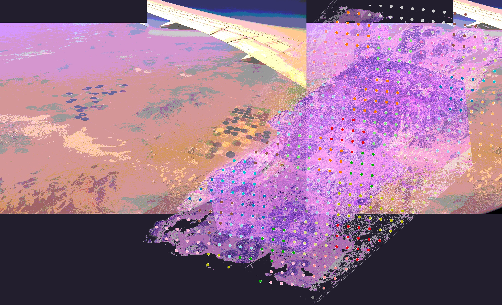

The Omics Revolution: Exploration of a cell and its environment through a spatial transcriptomics lens.
Part I (of a 3-part series): Technology.


Hi, I'm Inga, a Rosetrees PhD Plus fellow completing my PhD at the University of Oxford. My research focuses on the intersection of biophysics and bioengineering.
Over the past few years I have explored the use of nucleic acid reaction networks for diagnostic and therapeutic applications alike. As part of the Stevens Group, my work is highly translational: . I have also learnt to outsource my pipetting to an I.DOT (automated pressure dispensing robot).
Previously, I completed a MEng in Materials Science and Engineering, where I first discovered though nanomaterials, DFT/MD simulations, and optoelectronics what it's like to be an artist at the nanoscale.
Selected substacks on the intersection of bits and atoms.
Selected publications. More on Google Scholar / ORCID.